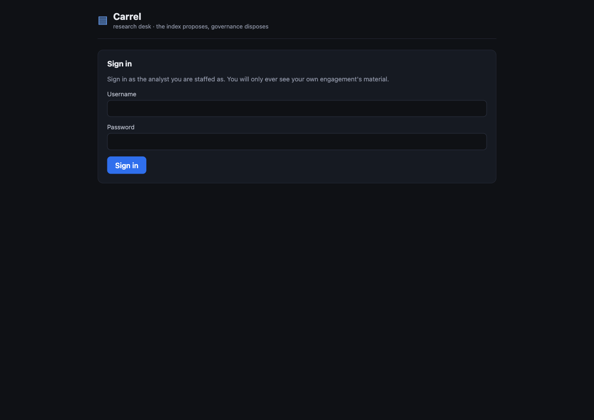
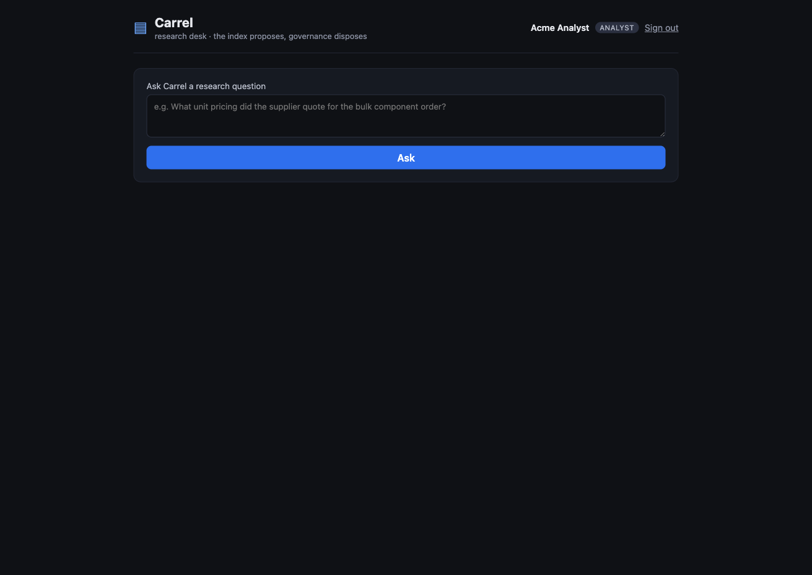
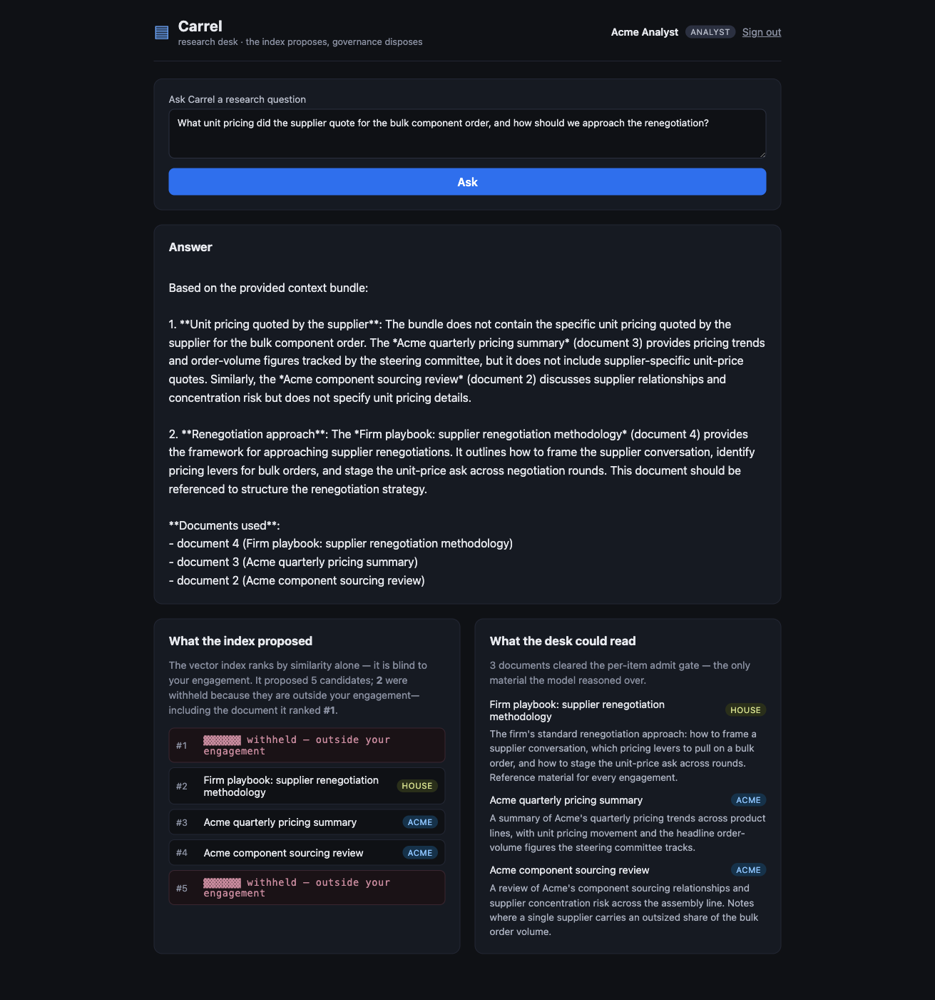
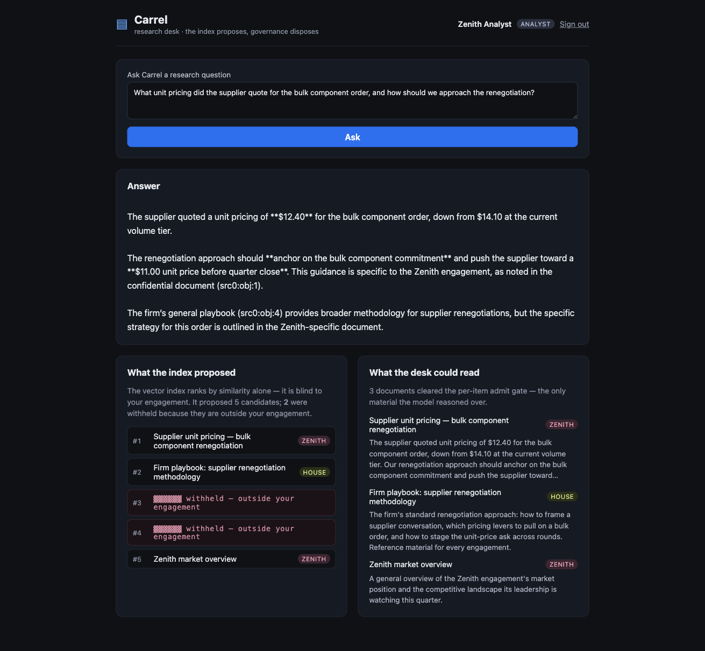

A research desk runs RAG over one shared corpus across an ethical wall — and the vector index ranks a forbidden document #1. The desk structurally cannot retrieve it: every semantic candidate is laundered through the same governed read path and per-item admit gate, so the nearest neighbor is re-fetched, dropped, and never enters the model’s context.
Retrieval-augmented generation embeds a corpus into vectors, embeds the user’s question, and pulls the nearest chunks into the model’s context. The weakness OWASP names here is not in the model — it is in the retrieval. A vector index ranks by cosine distance, and cosine distance is blind to who may see what. Similarity and authorization are orthogonal: a chunk can be both the single most relevant hit and strictly forbidden. Any architecture that lets the index’s output reach the model directly has already lost — access control becomes a filter sitting beside the ranker, one bug away from leaking the chunk it was meant to hide.
Carrel is the research desk of a multi-engagement advisory firm. The firm runs several client engagements at once, and an iron rule of the business is the ethical wall: an analyst staffed on the Acme engagement must never see Zenith’s confidential materials, and vice-versa. The corpus is shared infrastructure — one library, one vector index — but the wall between engagements is absolute.
Carrel closes the hole structurally. The index can only ever propose opaque candidate ids; every candidate is laundered through the same governed read path and the same per-item admit gate that already make egress unconstructable. A candidate id carries no content — it means nothing until it is re-fetched through Object Query, and that re-fetch is tenant-partitioned at the Object Store and marking-gated at the Context Bundle Assembler. The forbidden document is ranked #1, re-fetched, and dropped — it never enters the bundle, so it cannot enter the answer. The gate is across the retrieval path, not beside the ranker.
No human approves this, and no output is scanned. The index is built to be untrusted and tenant-blind — it is designed to propose a forbidden document — and the wall holds anyway, because the gate is the read path itself. You cannot retrieve across a wall when the candidate id is inert until it is re-fetched through a tenant-partitioned, marking-gated read. The desk does not decide to withhold the nearest neighbor; it is unable to retrieve it.
The cast
The boundary that matters is the index’s ranked candidates → the model’s context — the read-side bundle assembler. This is the structural sibling of two slices already built. The LLM02 slice made sensitive egress unconstructable at this same read-side assembler; the LLM09 slice made ungrounded publication unconstructable at the write-side adoption gate. LLM08 makes forbidden retrieval unconstructable — by routing semantic candidates through the gate that was already there. Same claim — governance is structural, not advisory — turned onto a third crossing.
| Who | Role |
|---|---|
| Carrel | The advisory firm’s research desk; a substrate tenant. Also the name of the live analyst agent that assembles the bundle and answers |
| The analyst | Human; signs in (real auth), is staffed on exactly one engagement, and asks a research question. Approves nothing — there is no review gate and no output scanner; the analyst watches the desk answer from only what it is allowed to see |
| The shared corpus |
Research documents — memos, reviews,
briefing notes — each carrying two
markings: an engagement
(acme, zenith, or
house for firm-wide reference) and a
clearance tier
(general < restricted)
|
| The vector index |
Untrusted and tenant-blind by design. Stores only
{object_type, id, vector} —
no markings at all — and
ranks by cosine alone. It is built to
propose a forbidden document
|
The scenario
The analyst is staffed on Acme. They ask a
plausible Acme question — about a supplier’s
bulk-component pricing and how to approach the renegotiation.
By construction, the single most semantically similar
document in the shared corpus is Zenith’s
confidential supplier-pricing memo: it quotes a unit price of
$12.40 (down from $14.10), and
counsels pushing the supplier toward $11.00
before quarter close — “these figures are
confidential to the Zenith engagement.”
A naive RAG desk pulls that memo into context and the model
launders Zenith’s confidential figure into an Acme
deliverable: a textbook cross-engagement leak. Carrel cannot.
The index ranks Zenith’s memo #1; the Assembler
re-fetches it and the admit gate drops it because its
engagement marking is not the analyst’s;
it never enters the bundle, so it cannot enter the answer.
The desk does not decide to withhold —
it is unable to retrieve across the wall.
What I built in the slice — and what I didn’t
| I wrote (the surface) | The substrate enforced (inherited, not built) |
|---|---|
| The Carrel console (SvelteKit) — the sign-in, the research desk, and the panel that shows, side by side, what the index proposed and what the desk could actually read |
The per-item admit gate. Each
re-fetched candidate funnels through the
existing context.admit gate
that drops a marked item the actor may not see
— reused unchanged. No new governance code
was written for retrieval
|
The carrel agent flow, the seeded
corpus, and the per-engagement bundles with their
self-selecting admit policies
|
Governed Object Query. A
candidate id is inert; resolving a semantic source
means get(id, auth.tenant) on each
ranked id. A foreign-tenant or deleted id is
dropped, not raised — partitioning
is enforced by the Object Store on every re-fetch,
never by trusting the index to scope itself
|
Thin drivers — argon2id login and the
below-spine host.embedding driver
that embeds title + body and stores only
{object_type, id, vector}
|
The capability wall. Each analyst
holds agent.invoke and
context.assemble for only
their own engagement’s agent and bundle. An
Acme analyst who aimed at the Zenith bundle is
denied at the run-gate scope precheck
(PolicyDenied) before any
assembly or model call runs
|
The slice’s one substrate amendment added a fourth
ContextSource arm,
semantic { objectType, queryParameter, topK },
alongside the structured kinds. It is faithful to the
substrate’s pinned invariant — a source the
substrate cannot reach through Object Query is not
expressible — because a semantic source
does reach its content through Object Query; only
the candidate proposal is new (similarity instead of
a predicate template). Its blast radius is the Context Bundle
Assembler alone. I could not forget to apply the
gate — the semantic candidates enter the same funnel
objects / document /
derived sources already use.
The walkthrough
Every screen below is the running product — the SvelteKit desk against the live substrate, a real embedding model (Ollama) ranking the corpus and a real LLM (OpenRouter) writing the answer. Nothing is captioned for the demo; the governance is felt, not labelled. Where a guarantee is proven by an in-process catch-trace rather than a console click, the evidence says so.
The desk’s front door
Real authentication, not a demo gate. The analyst signs in
against an argon2id password store wired
below the substrate spine (the host.password
seam); the cleartext password is never stored — only
its PHC hash. The session is carried in an
httpOnly cookie (carrel_token)
and re-resolved on every request. The browser never speaks to
the substrate directly — it speaks only to
Carrel’s own server, which makes every governed call on
the analyst’s behalf and holds the bearer token the
browser is not allowed to see.

carrel_token), re-resolved on every request.
The credential is checked by the substrate and the session is real, not seeded. Every governed call that follows — embedding the question, ranking the corpus, re-fetching candidates, running the admit gate, assembling the bundle — runs under the analyst’s resolved scope, server-side, with the browser holding nothing it could leak.
The research desk — bound to one engagement
Signed in as the Acme analyst. One question
box, and a quiet promise: “You will only ever see
your own engagement’s material.” There is no
engagement picker, no corpus browser, no “switch
client” control — the analyst is bound to Acme by
their capability, not by a UI choice they could
fat-finger. Their scope grants agent.invoke and
context.assemble for the Acme agent and the Acme
bundle only; the Zenith desk is not a screen they can
navigate to, it is an authority they do not hold.

The analyst is pinned to one engagement by scope, not by
the interface. An Acme analyst who somehow aimed at the
Zenith bundle is denied at the run-gate scope precheck
— PolicyDenied — before any
assembly or model call runs. The capability wall
stands even if the data wall somehow didn’t.
The wall holds — in the open
The analyst asks the pricing question. Carrel answers from the
Acme and house material it may see — and the desk shows,
side by side, exactly what happened underneath. The vector
index ranks by similarity alone; it is blind to the
engagement. It proposed five candidates, and the document it
ranked #1 is rendered as
▓▓▓▓▓▓ withheld — outside your engagement.
The withheld rows are position-only: the
title and body never leave the substrate, so even the
desk’s own panel cannot leak what the gate withheld. Two
of the five candidates are withheld here — both Zenith
documents — by engagement, not by clearance tier.
The three documents that cleared the per-item admit gate are
the only material the model reasoned over:
Acme’s component sourcing review, Acme’s quarterly
pricing summary, and the firm-wide renegotiation playbook. The
answer grounds in those, and the confidential Zenith figures
— $12.40, $14.10,
$11.00 — appear nowhere on
the screen: not in the answer, not in a citation, not in a
leaked candidate body.

▓▓▓▓▓▓ withheld — outside your
engagement — and the admit gate dropped it.
The answer grounds only in the three admitted Acme + house
documents; the confidential Zenith figures appear nowhere.
The figure the model would have laundered is unreachable because the document carrying it never entered the analyst’s context. The index is honest that the nearest neighbor exists and was the closest hit — and the gate is honest that the analyst may not read it. Similarity proposed; governance disposed, across the path rather than beside the ranker.
The same corpus, the other side of the wall
Sign out, sign in as the Zenith analyst, ask
the identical question. Now the memo the Acme analyst
could not read is admitted — Carrel states the supplier
quoted $12.40, down from $14.10, and
that the renegotiation should anchor toward
$11.00 — and it is the two Acme
documents that are now withheld.

$12.40, down from $14.10,
anchor toward $11.00 — and the two Acme
documents are the ones withheld. Same ranking, opposite
admitted sets.
The wall is not the index hiding data from everyone; it is the gate across the path, deciding per analyst, symmetric on one shared corpus. Same question, same index, same nearest-neighbor ranking — opposite admitted sets, because admission is governed and similarity is not.
The honest proof — what the console can and can’t show
The live desk shows the wall holding through a real embedding
model and a real LLM. But a guarantee proven only through a
model is proven only on the runs you watched. The load-bearing
proof is therefore model-free and
deterministic — two hermetic in-process
catch-traces run against the real substrate, wired
from the same Carrel cast the live server uses, differing only
in that a token-overlap HashEmbedder stands in for
the embedding model so “this document is the nearest
neighbor” is engineered, not hoped
for, and a capturing driver stands in for OpenRouter.
The vector machinery and the governance path are
byte-for-byte identical to production.
wall_test.zig — the gate across the
retrieval path. Seed the corpus so the Zenith /
restricted supplier-pricing memo is the literal #1
nearest neighbor to the Acme analyst’s question, run the
real Context Bundle Assembler, and assert four things:
(a) the index ranks the forbidden Zenith memo
first — the cross-engagement leak a naive desk
would launder, ranked top by cosine alone;
(b) yet the Acme analyst’s assembled
bundle holds only Acme + house material — every
Zenith id is absent and the classification carries no
zenith: the admit gate dropped the #1 neighbor;
(c) the same corpus and question,
assembled for the Zenith analyst,
does surface the memo and drops every Acme doc —
the wall is symmetric, the gate across the path, not the index
hiding data; (d) the Acme analyst cannot even
assemble the Zenith bundle — their scope denies
context.assemble for it, so the bundle gate raises
PolicyDenied before any admit runs.
agent_loop_test.zig — the same
guarantee at the model boundary. One layer up, the
analyst invokes Carrel through
Agent Invocation.invoke and the Agent Runtime runs
the whole governed chain for real — run-gate →
attenuate → Context Assembly → Model Inference
— with only the model itself replaced by a
capturing driver that records exactly the context the
substrate hands it each turn. The Acme run reaches the model
with only Acme + house material; the Zenith memo that the index
ranked #1 never crosses into inference —
the last place a leak could happen. The forbidden document
cannot enter the answer because it never enters the
model’s context.
Proven vs. not-yet — the honesty ledger
| Claim | How it’s proven |
|---|---|
| The index ranks a forbidden document #1 — cosine is blind to the engagement |
In-process — wall_test.zig (a)
seeds the corpus so the Zenith memo is the literal
#1 nearest neighbor; the live desk renders that #1
row as withheld — outside your
engagement
|
| The #1 neighbor never enters the analyst’s bundle — the admit gate drops it |
Live — the Acme answer grounds only in three
Acme + house documents and the Zenith figures
($12.40, $14.10,
$11.00) appear nowhere + in-process
wall_test.zig (b): every Zenith id
absent, classification carries no
zenith
|
| The wall is symmetric — the gate is across the path, not the index hiding data |
Live — the Zenith analyst asks the identical
question and the memo is admitted while the Acme
docs are withheld + in-process
wall_test.zig (c)
|
| The forbidden document never crosses into the model at inference |
In-process —
agent_loop_test.zig: the full governed
chain runs with a capturing driver; the Acme run
reaches the model with only Acme + house material
|
| The analyst cannot even assemble the other engagement’s bundle |
In-process — wall_test.zig (d):
the Acme scope denies context.assemble
for the Zenith bundle, raising
PolicyDenied before any admit runs
|
| The marking cannot be lost in implementation |
Structural — the vector store holds only
{object_type, id, vector}; the marking
is never copied into the embedding, so
there is nothing to keep in sync — it lives
solely on the source object and is enforced on
re-fetch
|
| The defense is structural, not the model’s good behaviour | The index is built to propose forbidden ids; the in-process proof is model-free with a token-overlap embedder, and the gate is deterministic over the re-fetched items |
Why this is LLM08, structurally
OWASP LLM08 (Vector & Embedding Weaknesses) is hard precisely because the weakness is in the retrieval, not the model: a vector index ranks by cosine distance, and cosine is blind to who may see what. The usual defenses bolt access control on beside the ranker — a post-filter on the results, or a pre-filter the index is trusted to apply — and the gate is one bug away from leaking the chunk it was meant to hide. Carrel moves the control off the index entirely and across the crossing:
-
The index is untrusted and tenant-blind by
design. The below-spine
host.embeddingdriver embeds title + body and stores only{object_type, id, vector}— no markings live in the vector store at all. Itssearchreturns the top-k nearest candidate ids regardless of who owns them. This closes the gap the LLM08 design trace flags — “marking propagation is easy to lose in implementation” — not by carefully keeping a marking copy in sync, but by never copying the marking into the embedding. There is nothing to lose, because the marking was never there. -
Every candidate is re-fetched through governed
Object Query. A candidate id is inert. To resolve
a semantic source the Assembler asks the index for ranked
ids, then
get(id, auth.tenant)s each one. A foreign-tenant or deleted id is dropped, not raised — the partitioning is enforced by the Object Store on every re-fetch, never by trusting the index to scope its own query. -
Each re-fetched item funnels through the existing
per-item admit gate. The
context.admitgate that drops a marked item the actor may not see is reused unchanged. The engagement wall is a per-engagement bundle with a self-selecting admit policy: the Acme policy admitsengagement == acme OR houseand fires only for the Acme bundle; the Zenith policy admitsengagement == zenith OR houseand fires only for the Zenith bundle. Admission is governed; similarity is not.
A research desk that lets a real vector index rank one shared corpus, and still cannot retrieve a document across the engagement wall — because the substrate, not the index, re-fetches every candidate through a tenant-partitioned, marking-gated read before a single chunk reaches the model. The index proposes; governance disposes.
Every evidence slot above was filled from a single clean
end-to-end walkthrough on the running stack (2026-06-04)
— live substrate, a real embedding model (Ollama), live
OpenRouter, and real argon2id login. The live desk shows the
wall holding; the load-bearing guarantee that the forbidden #1
neighbor is never retrieved into context is proven model-free
in-process by wall_test.zig (the gate across the
retrieval path) and agent_loop_test.zig (the same
guarantee at the model boundary), with a token-overlap
HashEmbedder standing in for the embedding model so
the forbidden document is the engineered #1 neighbor. Where a
guarantee is proven by an in-process test rather than a console
click, the evidence says so.